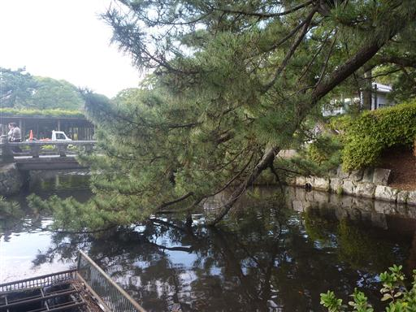
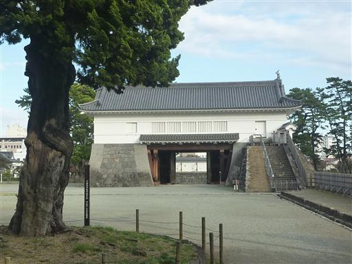
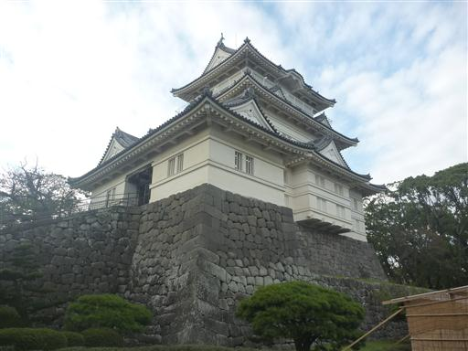
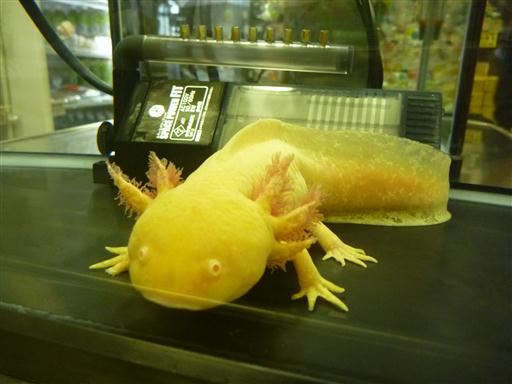
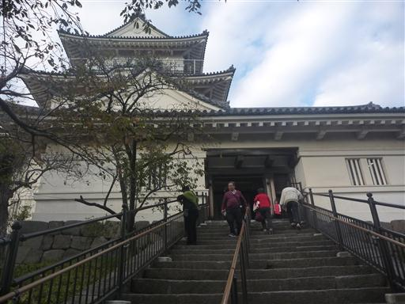
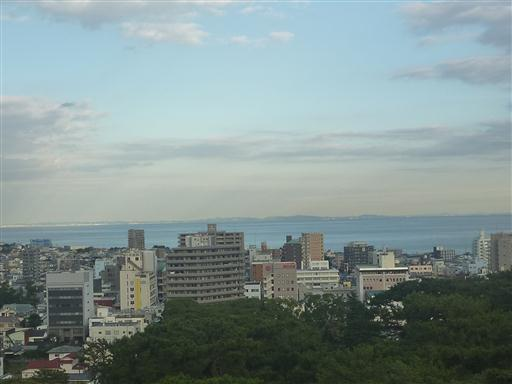
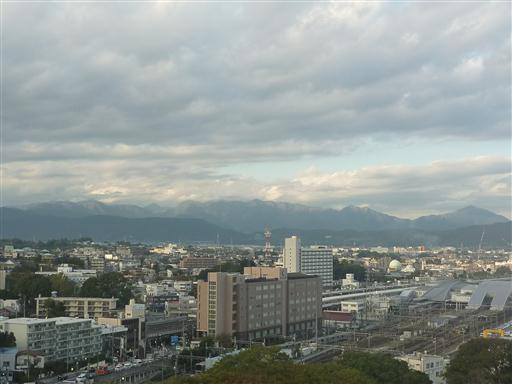

小田原城
| 日付 | 2012年11月2日（金） |
|---|---|
| メンバー | 友人（男4） |
| アクセス | 車 |
本日は会社の特別休日なので久しぶりに同期と遊びに行くことにする。
目的地は歴史に名を残す小田原城だ。
小田原城の堀に松の木が伸びている。
堀にかかる橋を渡って城内に入る。

銅門。二の丸の表門で1997年に復元された。

小田原城の天守閣。この天守閣も1960年に再建されたもの。

天守閣前の広場。平日なので人影はまばら。

広場にある売店ではなぜかウーパールーパーが飼われている。

小田原城天守閣内に入る。入館料は400円。
中は歴史資料の展示室となっている。

最上階の展望室からは四囲の眺めを得ることができる。
思ったより近くに海が広がっている。

反対側に見えるのは丹沢の山並だ。
久しぶりに同期と出かけた休日だった。
